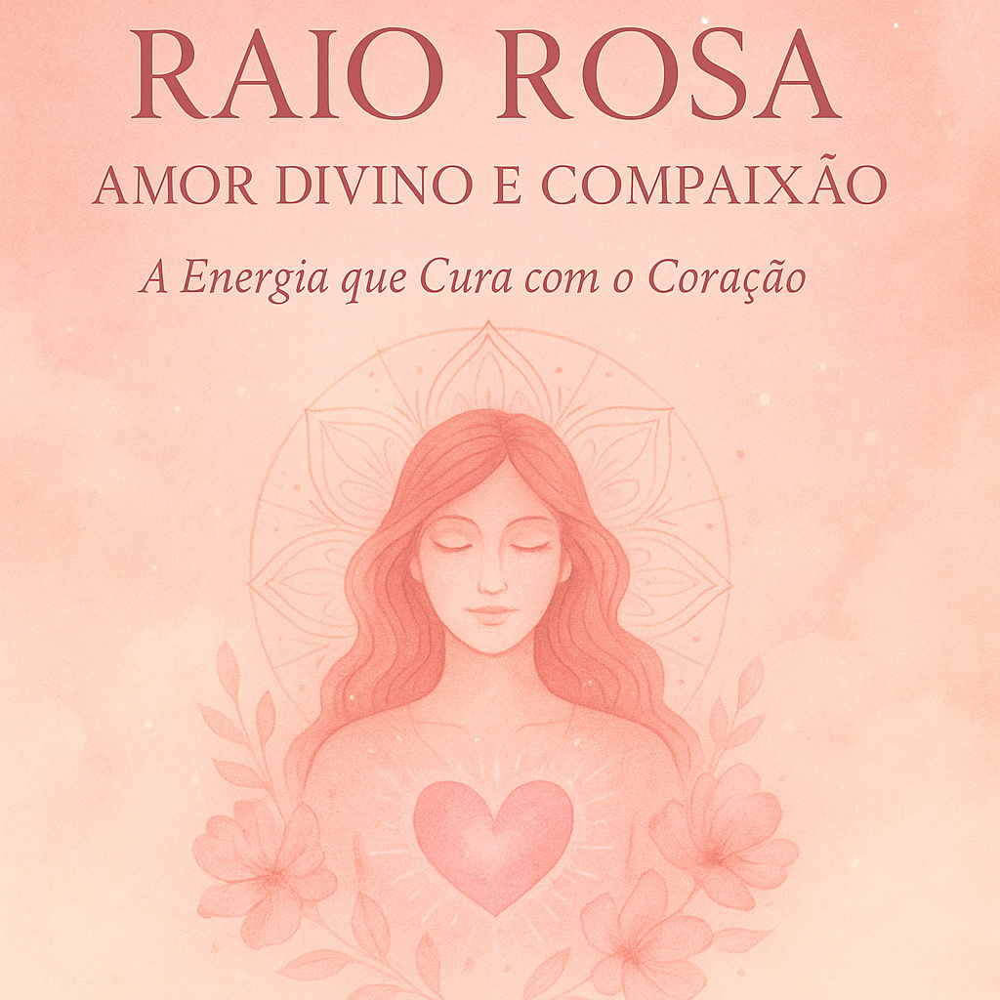

🌸 O que você encontrará neste eBook:
- Os fundamentos espirituais do Raio Rosa
- Conexão com Arcanjo Samuel e Mestra Rowena
- Afirmações de amor, acolhimento e perdão
- Meditações e práticas energéticas com o coração
- Rituais e visualizações para amor-próprio e relacionamentos